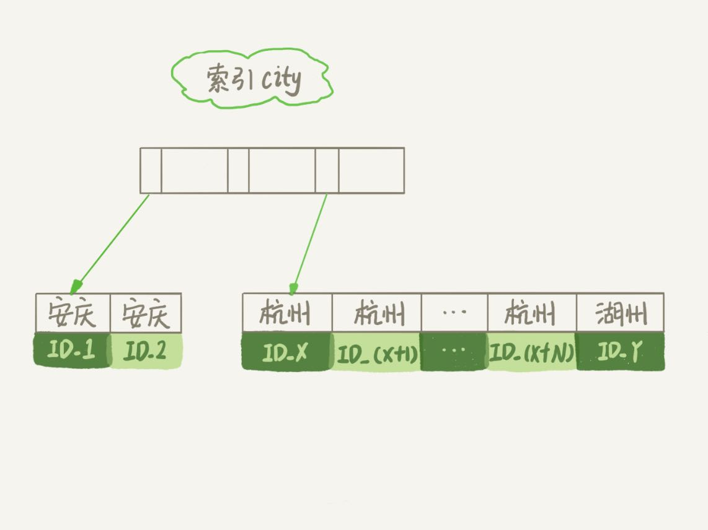
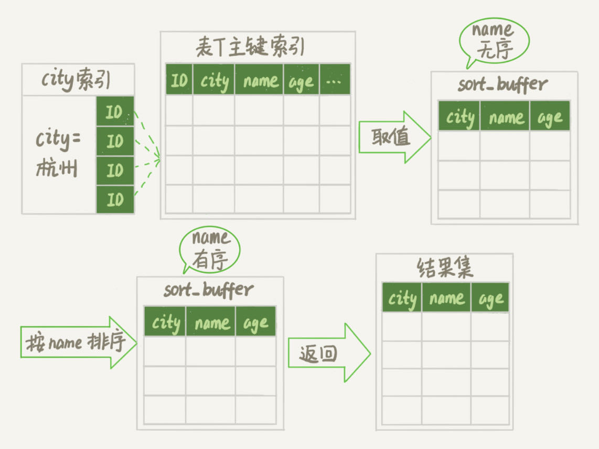
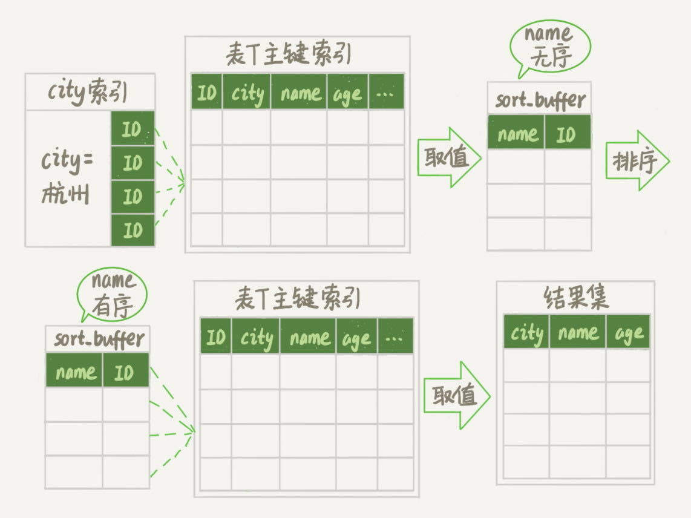
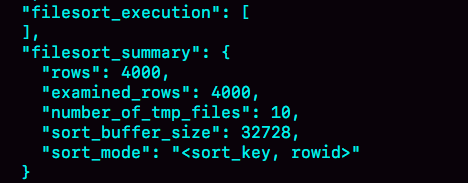
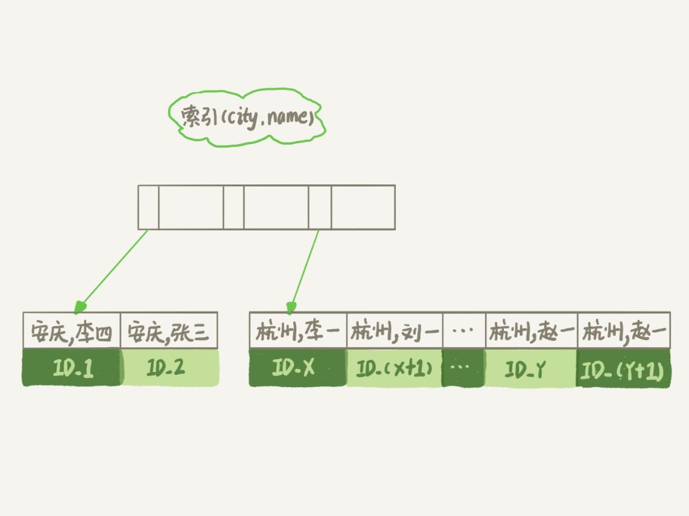
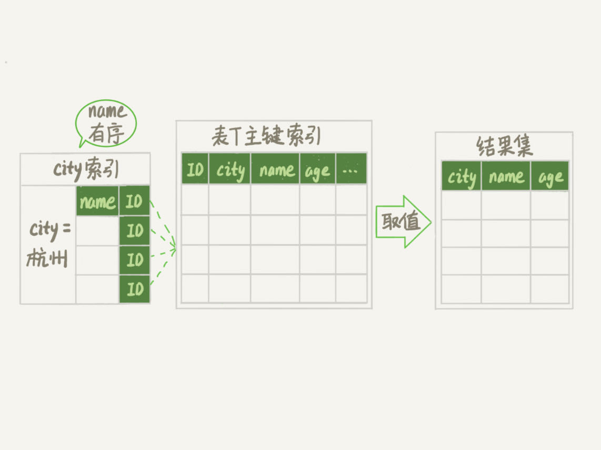
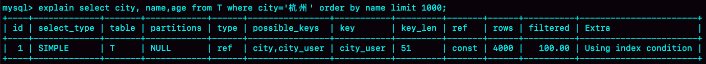
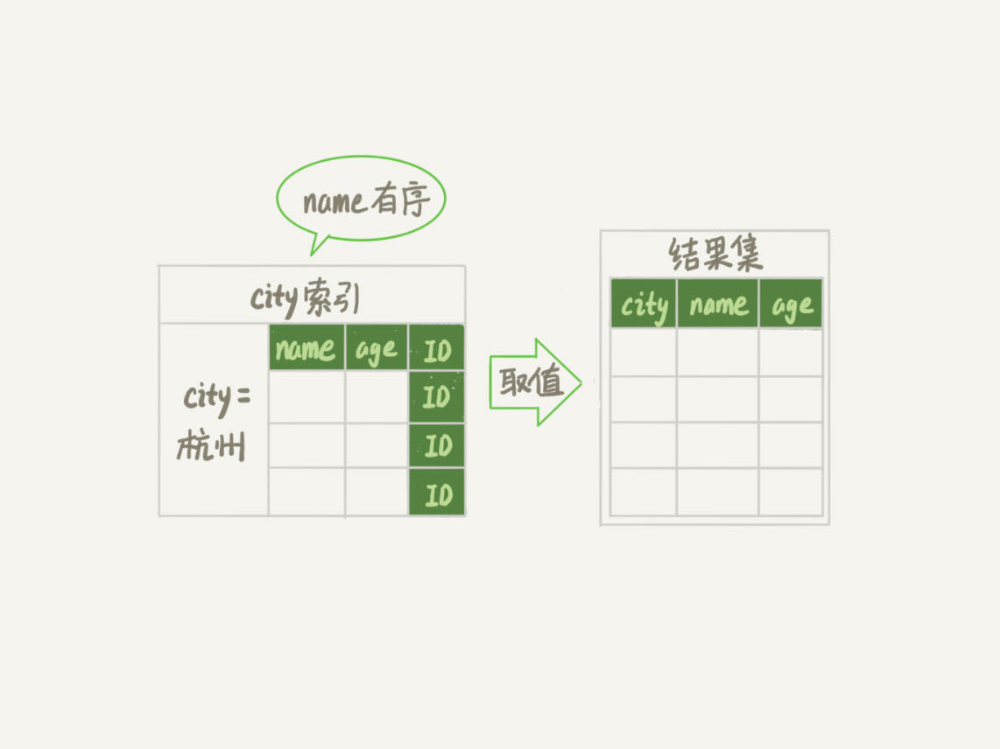
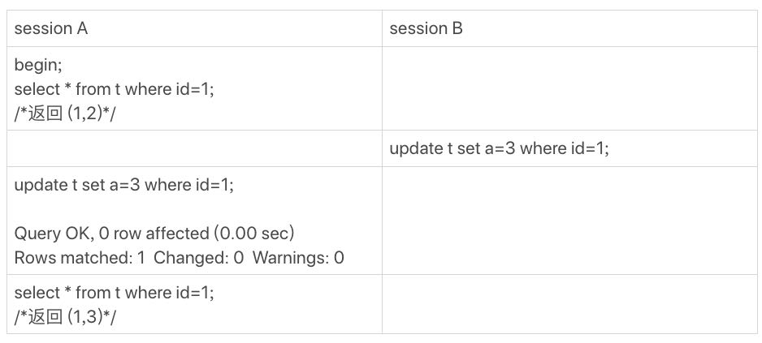
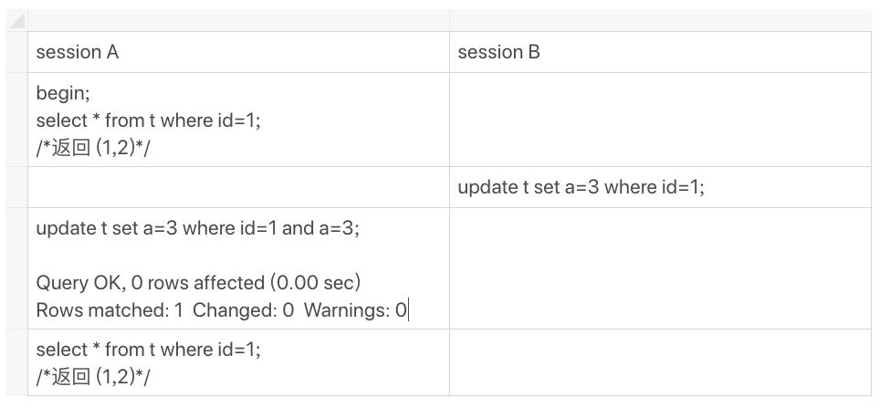

在你开发应用的时候，一定会经常碰到需要根据指定的字段排序来显示结果的需求。还是以我们前面举例用过的市民表为例，假设你要查询城市是“杭州”的所有人名字，并且按照姓名排序返回前1000个人的姓名、年龄。
假设这个表的部分定义是这样的：
CREATE TABLE `t` (
`id` int(11) NOT NULL,
`city` varchar(16) NOT NULL,
`name` varchar(16) NOT NULL,
`age` int(11) NOT NULL,
`addr` varchar(128) DEFAULT NULL,
PRIMARY KEY (`id`),
KEY `city` (`city`)
) ENGINE=InnoDB;
这时，你的SQL语句可以这么写：
select city,name,age from t where city='杭州' order by name limit 1000 ;
这个语句看上去逻辑很清晰，但是你了解它的执行流程吗？今天，我就和你聊聊这个语句是怎么执行的，以及有什么参数会影响执行的行为。
全字段排序
前面我们介绍过索引，所以你现在就很清楚了，为避免全表扫描，我们需要在city字段加上索引。
在city字段上创建索引之后，我们用explain命令来看看这个语句的执行情况。

Extra这个字段中的“Using filesort”表示的就是需要排序，MySQL会给每个线程分配一块内存用于排序，称为sort_buffer。
为了说明这个SQL查询语句的执行过程，我们先来看一下city这个索引的示意图。

从图中可以看到，满足city='杭州’条件的行，是从ID_X到ID_(X+N)的这些记录。
通常情况下，这个语句执行流程如下所示 ：
- 初始化sort_buffer，确定放入name、city、age这三个字段；
- 从索引city找到第一个满足city='杭州’条件的主键id，也就是图中的ID_X；
- 到主键id索引取出整行，取name、city、age三个字段的值，存入sort_buffer中；
- 从索引city取下一个记录的主键id；
- 重复步骤3、4直到city的值不满足查询条件为止，对应的主键id也就是图中的ID_Y；
- 对sort_buffer中的数据按照字段name做快速排序；
- 按照排序结果取前1000行返回给客户端。
我们暂且把这个排序过程，称为全字段排序，执行流程的示意图如下所示，下一篇文章中我们还会用到这个排序。

图中“按name排序”这个动作，可能在内存中完成，也可能需要使用外部排序，这取决于排序所需的内存和参数sort_buffer_size。
sort_buffer_size，就是MySQL为排序开辟的内存（sort_buffer）的大小。如果要排序的数据量小于sort_buffer_size，排序就在内存中完成。但如果排序数据量太大，内存放不下，则不得不利用磁盘临时文件辅助排序。
你可以用下面介绍的方法，来确定一个排序语句是否使用了临时文件。
/* 打开optimizer_trace，只对本线程有效 */
SET optimizer_trace='enabled=on';
/* @a保存Innodb_rows_read的初始值 */
select VARIABLE_VALUE into @a from performance_schema.session_status where variable_name = 'Innodb_rows_read';
/* 执行语句 */
select city, name,age from t where city='杭州' order by name limit 1000;
/* 查看 OPTIMIZER_TRACE 输出 */
SELECT * FROM `information_schema`.`OPTIMIZER_TRACE`\G
/* @b保存Innodb_rows_read的当前值 */
select VARIABLE_VALUE into @b from performance_schema.session_status where variable_name = 'Innodb_rows_read';
/* 计算Innodb_rows_read差值 */
select @b-@a;
这个方法是通过查看 OPTIMIZER_TRACE 的结果来确认的，你可以从 number_of_tmp_files中看到是否使用了临时文件。

number_of_tmp_files表示的是，排序过程中使用的临时文件数。你一定奇怪，为什么需要12个文件？内存放不下时，就需要使用外部排序，外部排序一般使用归并排序算法。可以这么简单理解，MySQL将需要排序的数据分成12份，每一份单独排序后存在这些临时文件中。然后把这12个有序文件再合并成一个有序的大文件。
如果sort_buffer_size超过了需要排序的数据量的大小，number_of_tmp_files就是0，表示排序可以直接在内存中完成。
否则就需要放在临时文件中排序。sort_buffer_size越小，需要分成的份数越多，number_of_tmp_files的值就越大。
接下来，我再和你解释一下图4中其他两个值的意思。
我们的示例表中有4000条满足city='杭州’的记录，所以你可以看到 examined_rows=4000，表示参与排序的行数是4000行。
sort_mode 里面的packed_additional_fields的意思是，排序过程对字符串做了“紧凑”处理。即使name字段的定义是varchar(16)，在排序过程中还是要按照实际长度来分配空间的。
同时，最后一个查询语句select @b-@a 的返回结果是4000，表示整个执行过程只扫描了4000行。
这里需要注意的是，为了避免对结论造成干扰，我把internal_tmp_disk_storage_engine设置成MyISAM。否则，select @b-@a的结果会显示为4001。
这是因为查询OPTIMIZER_TRACE这个表时，需要用到临时表，而internal_tmp_disk_storage_engine的默认值是InnoDB。如果使用的是InnoDB引擎的话，把数据从临时表取出来的时候，会让Innodb_rows_read的值加1。
rowid排序
在上面这个算法过程里面，只对原表的数据读了一遍，剩下的操作都是在sort_buffer和临时文件中执行的。但这个算法有一个问题，就是如果查询要返回的字段很多的话，那么sort_buffer里面要放的字段数太多，这样内存里能够同时放下的行数很少，要分成很多个临时文件，排序的性能会很差。
所以如果单行很大，这个方法效率不够好。
那么，如果MySQL认为排序的单行长度太大会怎么做呢？
接下来，我来修改一个参数，让MySQL采用另外一种算法。
SET max_length_for_sort_data = 16;
max_length_for_sort_data，是MySQL中专门控制用于排序的行数据的长度的一个参数。它的意思是，如果单行的长度超过这个值，MySQL就认为单行太大，要换一个算法。
city、name、age 这三个字段的定义总长度是36，我把max_length_for_sort_data设置为16，我们再来看看计算过程有什么改变。
新的算法放入sort_buffer的字段，只有要排序的列（即name字段）和主键id。
但这时，排序的结果就因为少了city和age字段的值，不能直接返回了，整个执行流程就变成如下所示的样子：
- 初始化sort_buffer，确定放入两个字段，即name和id；
- 从索引city找到第一个满足city='杭州’条件的主键id，也就是图中的ID_X；
- 到主键id索引取出整行，取name、id这两个字段，存入sort_buffer中；
- 从索引city取下一个记录的主键id；
- 重复步骤3、4直到不满足city='杭州’条件为止，也就是图中的ID_Y；
- 对sort_buffer中的数据按照字段name进行排序；
- 遍历排序结果，取前1000行，并按照id的值回到原表中取出city、name和age三个字段返回给客户端。
这个执行流程的示意图如下，我把它称为rowid排序。

对比图3的全字段排序流程图你会发现，rowid排序多访问了一次表t的主键索引，就是步骤7。
需要说明的是，最后的“结果集”是一个逻辑概念，实际上MySQL服务端从排序后的sort_buffer中依次取出id，然后到原表查到city、name和age这三个字段的结果，不需要在服务端再耗费内存存储结果，是直接返回给客户端的。
根据这个说明过程和图示，你可以想一下，这个时候执行select @b-@a，结果会是多少呢？
现在，我们就来看看结果有什么不同。
首先，图中的examined_rows的值还是4000，表示用于排序的数据是4000行。但是select @b-@a这个语句的值变成5000了。
因为这时候除了排序过程外，在排序完成后，还要根据id去原表取值。由于语句是limit 1000，因此会多读1000行。

从OPTIMIZER_TRACE的结果中，你还能看到另外两个信息也变了。
- sort_mode变成了<sort_key, rowid>，表示参与排序的只有name和id这两个字段。
- number_of_tmp_files变成10了，是因为这时候参与排序的行数虽然仍然是4000行，但是每一行都变小了，因此需要排序的总数据量就变小了，需要的临时文件也相应地变少了。
全字段排序 VS rowid排序
我们来分析一下，从这两个执行流程里，还能得出什么结论。
如果MySQL实在是担心排序内存太小，会影响排序效率，才会采用rowid排序算法，这样排序过程中一次可以排序更多行，但是需要再回到原表去取数据。
如果MySQL认为内存足够大，会优先选择全字段排序，把需要的字段都放到sort_buffer中，这样排序后就会直接从内存里面返回查询结果了，不用再回到原表去取数据。
这也就体现了MySQL的一个设计思想：如果内存够，就要多利用内存，尽量减少磁盘访问。
对于InnoDB表来说，rowid排序会要求回表多造成磁盘读，因此不会被优先选择。
这个结论看上去有点废话的感觉，但是你要记住它，下一篇文章我们就会用到。
看到这里，你就了解了，MySQL做排序是一个成本比较高的操作。那么你会问，是不是所有的order by都需要排序操作呢？如果不排序就能得到正确的结果，那对系统的消耗会小很多，语句的执行时间也会变得更短。
其实，并不是所有的order by语句，都需要排序操作的。从上面分析的执行过程，我们可以看到，MySQL之所以需要生成临时表，并且在临时表上做排序操作，其原因是原来的数据都是无序的。
你可以设想下，如果能够保证从city这个索引上取出来的行，天然就是按照name递增排序的话，是不是就可以不用再排序了呢？
确实是这样的。
所以，我们可以在这个市民表上创建一个city和name的联合索引，对应的SQL语句是：
alter table t add index city_user(city, name);
作为与city索引的对比，我们来看看这个索引的示意图。

在这个索引里面，我们依然可以用树搜索的方式定位到第一个满足city='杭州’的记录，并且额外确保了，接下来按顺序取“下一条记录”的遍历过程中，只要city的值是杭州，name的值就一定是有序的。
这样整个查询过程的流程就变成了：
- 从索引(city,name)找到第一个满足city='杭州’条件的主键id；
- 到主键id索引取出整行，取name、city、age三个字段的值，作为结果集的一部分直接返回；
- 从索引(city,name)取下一个记录主键id；
- 重复步骤2、3，直到查到第1000条记录，或者是不满足city='杭州’条件时循环结束。

可以看到，这个查询过程不需要临时表，也不需要排序。接下来，我们用explain的结果来印证一下。

从图中可以看到，Extra字段中没有Using filesort了，也就是不需要排序了。而且由于(city,name)这个联合索引本身有序，所以这个查询也不用把4000行全都读一遍，只要找到满足条件的前1000条记录就可以退出了。也就是说，在我们这个例子里，只需要扫描1000次。
这里我们可以再稍微复习一下。覆盖索引是指，索引上的信息足够满足查询请求，不需要再回到主键索引上去取数据。
按照覆盖索引的概念，我们可以再优化一下这个查询语句的执行流程。
针对这个查询，我们可以创建一个city、name和age的联合索引，对应的SQL语句就是：
alter table t add index city_user_age(city, name, age);
这时，对于city字段的值相同的行来说，还是按照name字段的值递增排序的，此时的查询语句也就不再需要排序了。这样整个查询语句的执行流程就变成了：
- 从索引(city,name,age)找到第一个满足city='杭州’条件的记录，取出其中的city、name和age这三个字段的值，作为结果集的一部分直接返回；
- 从索引(city,name,age)取下一个记录，同样取出这三个字段的值，作为结果集的一部分直接返回；
- 重复执行步骤2，直到查到第1000条记录，或者是不满足city='杭州’条件时循环结束。

然后，我们再来看看explain的结果。

可以看到，Extra字段里面多了“Using index”，表示的就是使用了覆盖索引，性能上会快很多。
当然，这里并不是说要为了每个查询能用上覆盖索引，就要把语句中涉及的字段都建上联合索引，毕竟索引还是有维护代价的。这是一个需要权衡的决定。
小结
今天这篇文章，我和你介绍了MySQL里面order by语句的几种算法流程。
在开发系统的时候，你总是不可避免地会使用到order by语句。你心里要清楚每个语句的排序逻辑是怎么实现的，还要能够分析出在最坏情况下，每个语句的执行对系统资源的消耗，这样才能做到下笔如有神，不犯低级错误。
最后，我给你留下一个思考题吧。
假设你的表里面已经有了city_name(city, name)这个联合索引，然后你要查杭州和苏州两个城市中所有的市民的姓名，并且按名字排序，显示前100条记录。如果SQL查询语句是这么写的 ：
mysql> select * from t where city in ('杭州',"苏州") order by name limit 100;
那么，这个语句执行的时候会有排序过程吗，为什么？
如果业务端代码由你来开发，需要实现一个在数据库端不需要排序的方案，你会怎么实现呢？
进一步地，如果有分页需求，要显示第101页，也就是说语句最后要改成 “limit 10000,100”， 你的实现方法又会是什么呢？
你可以把你的思考和观点写在留言区里，我会在下一篇文章的末尾和你讨论这个问题。感谢你的收听，也欢迎你把这篇文章分享给更多的朋友一起阅读。
上期问题时间
上期的问题是，当MySQL去更新一行，但是要修改的值跟原来的值是相同的，这时候MySQL会真的去执行一次修改吗？还是看到值相同就直接返回呢？
这是第一次我们课后问题的三个选项都有同学选的，所以我要和你需要详细说明一下。
第一个选项是，MySQL读出数据，发现值与原来相同，不更新，直接返回，执行结束。这里我们可以用一个锁实验来确认。
假设，当前表t里的值是(1,2)。

session B的update 语句被blocked了，加锁这个动作是InnoDB才能做的，所以排除选项1。
第二个选项是，MySQL调用了InnoDB引擎提供的接口，但是引擎发现值与原来相同，不更新，直接返回。有没有这种可能呢？这里我用一个可见性实验来确认。
假设当前表里的值是(1,2)。

session A的第二个select 语句是一致性读（快照读)，它是不能看见session B的更新的。
现在它返回的是(1,3)，表示它看见了某个新的版本，这个版本只能是session A自己的update语句做更新的时候生成。（如果你对这个逻辑有疑惑的话，可以回顾下第8篇文章《事务到底是隔离的还是不隔离的？》中的相关内容）
所以，我们上期思考题的答案应该是选项3，即：InnoDB认真执行了“把这个值修改成(1,2)"这个操作，该加锁的加锁，该更新的更新。
然后你会说，MySQL怎么这么笨，就不会更新前判断一下值是不是相同吗？如果判断一下，不就不用浪费InnoDB操作，多去更新一次了？
其实MySQL是确认了的。只是在这个语句里面，MySQL认为读出来的值，只有一个确定的 (id=1), 而要写的是(a=3)，只从这两个信息是看不出来“不需要修改”的。
作为验证，你可以看一下下面这个例子。

补充说明：
上面我们的验证结果都是在binlog_format=statement格式下进行的。
@didiren 补充了一个case， 如果是binlog_format=row 并且binlog_row_image=FULL的时候，由于MySQL需要在binlog里面记录所有的字段，所以在读数据的时候就会把所有数据都读出来了。
根据上面说的规则，“既然读了数据，就会判断”， 因此在这时候，select * from t where id=1，结果就是“返回 (1,2)”。
同理，如果是binlog_row_image=NOBLOB, 会读出除blob 外的所有字段，在我们这个例子里，结果还是“返回 (1,2)”。
对应的代码如图15所示。这是MySQL 5.6版本引入的，在此之前我没有看过。所以，特此说明。

类似的，@mahonebags 同学提到了timestamp字段的问题。结论是：如果表中有timestamp字段而且设置了自动更新的话，那么更新“别的字段”的时候，MySQL会读入所有涉及的字段，这样通过判断，就会发现不需要修改。
这两个点我会在后面讲更新性能的文章中再展开。
评论区留言点赞板：
@Gavin 、@melon、@阿建 等同学提到了锁验证法；@郭江伟 同学提到了两个点，都非常好，有去实际验证。结论是这样的：第一，hexdump看出来没改应该是WAL机制生效了，要过一会儿，或者把库shutdown看看。第二，binlog没写是MySQL Server层知道行的值没变，所以故意不写的，这个是在row格式下的策略。你可以把binlog_format 改成statement再验证下。16 | “order by”是怎么工作的？
在你开发应用的时候，一定会经常碰到需要根据指定的字段排序来显示结果的需求。还是以我们前面举例用过的市民表为例，假设你要查询城市是“杭州”的所有人名字，并且按照姓名排序返回前1000个人的姓名、年龄。假设这个表的部分定义是这样的：CREATE TABLE `t` (`id` int(11) NOT NULL,`city` varchar(16) NOT NULL,`name` varchar(16) NOT NULL,`age` int(11) NOT NULL,`addr` varchar(128) DEFAULT NULL,PRIMARY KEY (`id`),KEY `city` (`city`)) ENGINE=InnoDB;这时，你的SQL语句可以这么写：select city,name,age from t where city='杭州' order by name limit 1000 ;这个语句看上去逻辑很清晰，但是你了解它的执行流程吗？今天，我就和你聊聊这个语句是怎么执行的，以及有什么参数会影响执行的行为。全字段排序
前面我们介绍过索引，所以你现在就很清楚了，为避免全表扫描，我们需要在city字段加上索引。在city字段上创建索引之后，我们用explain命令来看看这个语句的执行情况。图1 使用explain命令查看语句的执行情况 Extra这个字段中的“Using filesort”表示的就是需要排序，MySQL会给每个线程分配一块内存用于排序，称为sort_buffer。为了说明这个SQL查询语句的执行过程，我们先来看一下city这个索引的示意图。图2 city字段的索引示意图 从图中可以看到，满足city='杭州’条件的行，是从ID_X到ID_(X+N)的这些记录。通常情况下，这个语句执行流程如下所示 ：
图3 全字段排序 图中“按name排序”这个动作，可能在内存中完成，也可能需要使用外部排序，这取决于排序所需的内存和参数sort_buffer_size。sort_buffer_size，就是MySQL为排序开辟的内存（sort_buffer）的大小。如果要排序的数据量小于sort_buffer_size，排序就在内存中完成。但如果排序数据量太大，内存放不下，则不得不利用磁盘临时文件辅助排序。你可以用下面介绍的方法，来确定一个排序语句是否使用了临时文件。/* 打开optimizer_trace，只对本线程有效 */SET optimizer_trace='enabled=on';/* @a保存Innodb_rows_read的初始值 */select VARIABLE_VALUE into @a from performance_schema.session_status where variable_name = 'Innodb_rows_read';/* 执行语句 */select city, name,age from t where city='杭州' order by name limit 1000;/* 查看 OPTIMIZER_TRACE 输出 */SELECT * FROM `information_schema`.`OPTIMIZER_TRACE`\G/* @b保存Innodb_rows_read的当前值 */select VARIABLE_VALUE into @b from performance_schema.session_status where variable_name = 'Innodb_rows_read';/* 计算Innodb_rows_read差值 */select @b-@a;这个方法是通过查看 OPTIMIZER_TRACE 的结果来确认的，你可以从 number_of_tmp_files中看到是否使用了临时文件。图4 全排序的OPTIMIZER_TRACE部分结果 number_of_tmp_files表示的是，排序过程中使用的临时文件数。你一定奇怪，为什么需要12个文件？内存放不下时，就需要使用外部排序，外部排序一般使用归并排序算法。可以这么简单理解，MySQL将需要排序的数据分成12份，每一份单独排序后存在这些临时文件中。然后把这12个有序文件再合并成一个有序的大文件。如果sort_buffer_size超过了需要排序的数据量的大小，number_of_tmp_files就是0，表示排序可以直接在内存中完成。否则就需要放在临时文件中排序。sort_buffer_size越小，需要分成的份数越多，number_of_tmp_files的值就越大。接下来，我再和你解释一下图4中其他两个值的意思。我们的示例表中有4000条满足city='杭州’的记录，所以你可以看到 examined_rows=4000，表示参与排序的行数是4000行。sort_mode 里面的packed_additional_fields的意思是，排序过程对字符串做了“紧凑”处理。即使name字段的定义是varchar(16)，在排序过程中还是要按照实际长度来分配空间的。同时，最后一个查询语句select @b-@a 的返回结果是4000，表示整个执行过程只扫描了4000行。这里需要注意的是，为了避免对结论造成干扰，我把internal_tmp_disk_storage_engine设置成MyISAM。否则，select @b-@a的结果会显示为4001。这是因为查询OPTIMIZER_TRACE这个表时，需要用到临时表，而internal_tmp_disk_storage_engine的默认值是InnoDB。如果使用的是InnoDB引擎的话，把数据从临时表取出来的时候，会让Innodb_rows_read的值加1。rowid排序
在上面这个算法过程里面，只对原表的数据读了一遍，剩下的操作都是在sort_buffer和临时文件中执行的。但这个算法有一个问题，就是如果查询要返回的字段很多的话，那么sort_buffer里面要放的字段数太多，这样内存里能够同时放下的行数很少，要分成很多个临时文件，排序的性能会很差。所以如果单行很大，这个方法效率不够好。那么，如果MySQL认为排序的单行长度太大会怎么做呢？接下来，我来修改一个参数，让MySQL采用另外一种算法。SET max_length_for_sort_data = 16;max_length_for_sort_data，是MySQL中专门控制用于排序的行数据的长度的一个参数。它的意思是，如果单行的长度超过这个值，MySQL就认为单行太大，要换一个算法。city、name、age 这三个字段的定义总长度是36，我把max_length_for_sort_data设置为16，我们再来看看计算过程有什么改变。新的算法放入sort_buffer的字段，只有要排序的列（即name字段）和主键id。但这时，排序的结果就因为少了city和age字段的值，不能直接返回了，整个执行流程就变成如下所示的样子：
图5 rowid排序 对比图3的全字段排序流程图你会发现，rowid排序多访问了一次表t的主键索引，就是步骤7。需要说明的是，最后的“结果集”是一个逻辑概念，实际上MySQL服务端从排序后的sort_buffer中依次取出id，然后到原表查到city、name和age这三个字段的结果，不需要在服务端再耗费内存存储结果，是直接返回给客户端的。根据这个说明过程和图示，你可以想一下，这个时候执行select @b-@a，结果会是多少呢？现在，我们就来看看结果有什么不同。首先，图中的examined_rows的值还是4000，表示用于排序的数据是4000行。但是select @b-@a这个语句的值变成5000了。因为这时候除了排序过程外，在排序完成后，还要根据id去原表取值。由于语句是limit 1000，因此会多读1000行。图6 rowid排序的OPTIMIZER_TRACE部分输出 从OPTIMIZER_TRACE的结果中，你还能看到另外两个信息也变了。
全字段排序 VS rowid排序
我们来分析一下，从这两个执行流程里，还能得出什么结论。如果MySQL实在是担心排序内存太小，会影响排序效率，才会采用rowid排序算法，这样排序过程中一次可以排序更多行，但是需要再回到原表去取数据。如果MySQL认为内存足够大，会优先选择全字段排序，把需要的字段都放到sort_buffer中，这样排序后就会直接从内存里面返回查询结果了，不用再回到原表去取数据。这也就体现了MySQL的一个设计思想：如果内存够，就要多利用内存，尽量减少磁盘访问。对于InnoDB表来说，rowid排序会要求回表多造成磁盘读，因此不会被优先选择。这个结论看上去有点废话的感觉，但是你要记住它，下一篇文章我们就会用到。看到这里，你就了解了，MySQL做排序是一个成本比较高的操作。那么你会问，是不是所有的order by都需要排序操作呢？如果不排序就能得到正确的结果，那对系统的消耗会小很多，语句的执行时间也会变得更短。其实，并不是所有的order by语句，都需要排序操作的。从上面分析的执行过程，我们可以看到，MySQL之所以需要生成临时表，并且在临时表上做排序操作，其原因是原来的数据都是无序的。你可以设想下，如果能够保证从city这个索引上取出来的行，天然就是按照name递增排序的话，是不是就可以不用再排序了呢？确实是这样的。所以，我们可以在这个市民表上创建一个city和name的联合索引，对应的SQL语句是：alter table t add index city_user(city, name);作为与city索引的对比，我们来看看这个索引的示意图。图7 city和name联合索引示意图 在这个索引里面，我们依然可以用树搜索的方式定位到第一个满足city='杭州’的记录，并且额外确保了，接下来按顺序取“下一条记录”的遍历过程中，只要city的值是杭州，name的值就一定是有序的。这样整个查询过程的流程就变成了：
图8 引入(city,name)联合索引后，查询语句的执行计划 可以看到，这个查询过程不需要临时表，也不需要排序。接下来，我们用explain的结果来印证一下。图9 引入(city,name)联合索引后，查询语句的执行计划 从图中可以看到，Extra字段中没有Using filesort了，也就是不需要排序了。而且由于(city,name)这个联合索引本身有序，所以这个查询也不用把4000行全都读一遍，只要找到满足条件的前1000条记录就可以退出了。也就是说，在我们这个例子里，只需要扫描1000次。这里我们可以再稍微复习一下。覆盖索引是指，索引上的信息足够满足查询请求，不需要再回到主键索引上去取数据。按照覆盖索引的概念，我们可以再优化一下这个查询语句的执行流程。针对这个查询，我们可以创建一个city、name和age的联合索引，对应的SQL语句就是：alter table t add index city_user_age(city, name, age);这时，对于city字段的值相同的行来说，还是按照name字段的值递增排序的，此时的查询语句也就不再需要排序了。这样整个查询语句的执行流程就变成了：
图10 引入(city,name,age)联合索引后，查询语句的执行流程 然后，我们再来看看explain的结果。图11 引入(city,name,age)联合索引后，查询语句的执行计划 可以看到，Extra字段里面多了“Using index”，表示的就是使用了覆盖索引，性能上会快很多。当然，这里并不是说要为了每个查询能用上覆盖索引，就要把语句中涉及的字段都建上联合索引，毕竟索引还是有维护代价的。这是一个需要权衡的决定。小结
今天这篇文章，我和你介绍了MySQL里面order by语句的几种算法流程。在开发系统的时候，你总是不可避免地会使用到order by语句。你心里要清楚每个语句的排序逻辑是怎么实现的，还要能够分析出在最坏情况下，每个语句的执行对系统资源的消耗，这样才能做到下笔如有神，不犯低级错误。最后，我给你留下一个思考题吧。假设你的表里面已经有了city_name(city, name)这个联合索引，然后你要查杭州和苏州两个城市中所有的市民的姓名，并且按名字排序，显示前100条记录。如果SQL查询语句是这么写的 ：mysql> select * from t where city in ('杭州',"苏州") order by name limit 100;那么，这个语句执行的时候会有排序过程吗，为什么？如果业务端代码由你来开发，需要实现一个在数据库端不需要排序的方案，你会怎么实现呢？进一步地，如果有分页需求，要显示第101页，也就是说语句最后要改成 “limit 10000,100”， 你的实现方法又会是什么呢？你可以把你的思考和观点写在留言区里，我会在下一篇文章的末尾和你讨论这个问题。感谢你的收听，也欢迎你把这篇文章分享给更多的朋友一起阅读。上期问题时间
上期的问题是，当MySQL去更新一行，但是要修改的值跟原来的值是相同的，这时候MySQL会真的去执行一次修改吗？还是看到值相同就直接返回呢？这是第一次我们课后问题的三个选项都有同学选的，所以我要和你需要详细说明一下。第一个选项是，MySQL读出数据，发现值与原来相同，不更新，直接返回，执行结束。这里我们可以用一个锁实验来确认。假设，当前表t里的值是(1,2)。图12 锁验证方式 session B的update 语句被blocked了，加锁这个动作是InnoDB才能做的，所以排除选项1。第二个选项是，MySQL调用了InnoDB引擎提供的接口，但是引擎发现值与原来相同，不更新，直接返回。有没有这种可能呢？这里我用一个可见性实验来确认。假设当前表里的值是(1,2)。图13 可见性验证方式 session A的第二个select 语句是一致性读（快照读)，它是不能看见session B的更新的。现在它返回的是(1,3)，表示它看见了某个新的版本，这个版本只能是session A自己的update语句做更新的时候生成。（如果你对这个逻辑有疑惑的话，可以回顾下第8篇文章《事务到底是隔离的还是不隔离的？》中的相关内容）所以，我们上期思考题的答案应该是选项3，即：InnoDB认真执行了“把这个值修改成(1,2)"这个操作，该加锁的加锁，该更新的更新。然后你会说，MySQL怎么这么笨，就不会更新前判断一下值是不是相同吗？如果判断一下，不就不用浪费InnoDB操作，多去更新一次了？其实MySQL是确认了的。只是在这个语句里面，MySQL认为读出来的值，只有一个确定的 (id=1), 而要写的是(a=3)，只从这两个信息是看不出来“不需要修改”的。作为验证，你可以看一下下面这个例子。图14 可见性验证方式--对照 补充说明：上面我们的验证结果都是在binlog_format=statement格式下进行的。@didiren 补充了一个case， 如果是binlog_format=row 并且binlog_row_image=FULL的时候，由于MySQL需要在binlog里面记录所有的字段，所以在读数据的时候就会把所有数据都读出来了。根据上面说的规则，“既然读了数据，就会判断”， 因此在这时候，select * from t where id=1，结果就是“返回 (1,2)”。同理，如果是binlog_row_image=NOBLOB, 会读出除blob 外的所有字段，在我们这个例子里，结果还是“返回 (1,2)”。对应的代码如图15所示。这是MySQL 5.6版本引入的，在此之前我没有看过。所以，特此说明。图15 binlog_row_image=FULL读字段逻辑 类似的，@mahonebags 同学提到了timestamp字段的问题。结论是：如果表中有timestamp字段而且设置了自动更新的话，那么更新“别的字段”的时候，MySQL会读入所有涉及的字段，这样通过判断，就会发现不需要修改。这两个点我会在后面讲更新性能的文章中再展开。评论区留言点赞板：@Gavin 、@melon、@阿建 等同学提到了锁验证法；@郭江伟 同学提到了两个点，都非常好，有去实际验证。结论是这样的：第一，hexdump看出来没改应该是WAL机制生效了，要过一会儿，或者把库shutdown看看。第二，binlog没写是MySQL Server层知道行的值没变，所以故意不写的，这个是在row格式下的策略。你可以把binlog_format 改成statement再验证下。